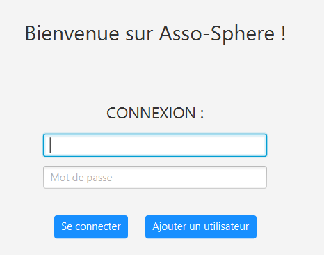

Asso-sphère.
Notre projet final de 1ère année de BUT informatique, était de créer une application qui s'occuperait de l'organisation d'un évènement.
Notre groupe était composé de 6 personnes, et nous avons choisi comme évènement, un forum d'association
Dans un premier temps, nous avons réaliser un diagramme de cas d'utillisation, un diagramme de séquence et un diagramme de classe.
En parallèle, nous avons étudier les besoins et les risques de notre projet.
Cela nous a permis de mieux visualiser notre application et d'avoir une ligne directrice lorsque nous allions commencé à coder
Nous avons ensuite conçu la maquette de l'application, puis nous avons commencé la meilleur partie, le codage de l'application.
Lors du dévellopement, je me suis occupé de toute la partie qui concernait le stand de nourriture lors du forum.
En tout ce projet s'est fait sur 3 mois et à la fin, notre application était fonctionelle.
Extrait de la page d'accueil de notre application
